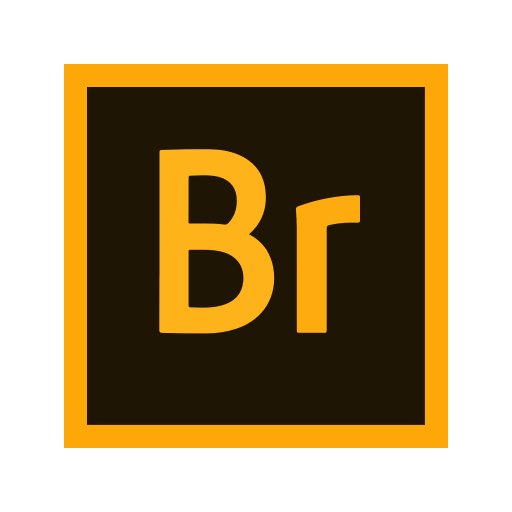

Hi, My name is Deorshi
& I am a passionate

Professional Experience

HTML Developer
As an HTML Developer, I specialize in creating well-structured and
semantic web pages that form the backbone of engaging and
user-friendly websites. With a keen eye for detail and a
commitment to best practices, I craft clean, efficient HTML code
that integrates seamlessly with CSS and JavaScript to deliver
responsive and interactive user interfaces.

Node.Js Developer
As a Node.js Developer, I specialize in building robust and
scalable server-side applications. With experience in developing
RESTful APIs and real-time applications, I utilize the power of
Node.js and Express to create efficient and maintainable backend
systems. By leveraging Node.js, I ensure seamless performance and
scalability in web applications, adhering to best practices and
industry standards.
Frontend Developer
As a Frontend Developer, I excel in creating dynamic and
responsive web applications that provide a seamless user
experience. I have hands-on experience with modern JavaScript
frameworks like React and Vue.js, which I used to develop and
deploy interactive and efficient web projects. My expertise
includes writing clean and maintainable code, implementing
responsive design principles, and ensuring cross-browser
compatibility.

Backend Developer
As a Backend Developer, I am proficient in creating robust and
scalable server-side applications. My experience includes
developing and maintaining APIs, managing databases, and ensuring
seamless communication between the server and client-side
applications.

Web Designer
My experience includes designing responsive layouts that enhance
user experience across various devices. I excel in using design
tools like Adobe XD & Figma.By staying updated with the latest
design trends and best practices, I aim to deliver aesthetically
pleasing and intuitive web designs that meet client needs and
improve user engagement.
Graphic Designer
My experience includes designing visually appealing graphics for
both digital and print media. I am proficient in using design
software such as Adobe Photoshop. My design philosophy centers on
understanding client needs and translating them into compelling
visual solutions that effectively communicate their brand message.

Video Editor
I am proficient in using industry-standard software like Adobe
Premiere Pro and Final Cut Pro to edit and enhance video footage.
My skills include cutting and assembling raw footage, adding
effects and transitions, color correction, and sound editing to
produce polished final videos.